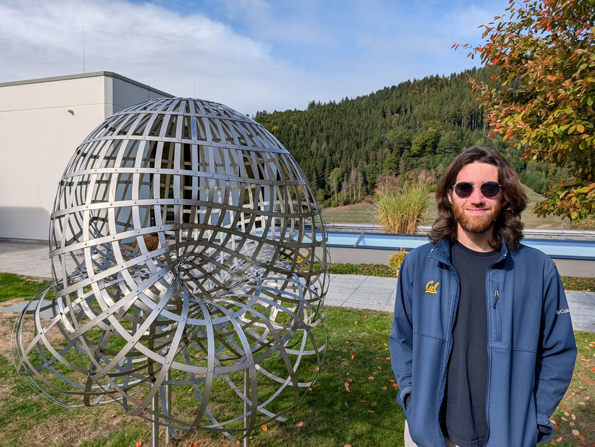

John S. Nolan

I am a Visiting Assistant Professor in the Department of Mathematics at The Ohio State University.
My research focuses on algebraic geometry and homological mirror symmetry, especially in the context of toric varieties and stacks.
I completed my PhD at UC Berkeley under the supervision of Constantin Teleman.
You can reach me at: nolan DOT 422 AT osu DOT edu.
Current and Recent Projects
- A Functorial Classification of Toric Stacks.
In this paper, I describe an approach to classifying toric stacks via stacky fans.
Most previous approaches to this classification problem consider only those toric stacks which arise as quotient stacks of toric varieties.
This is fine in the smooth case, but it fails to account for certain singular examples.
We correct this by introducing a local theory (based on the notion of "toric categories") that encompasses all toric stacks.
This project builds on some of the concepts developed in my PhD thesis but is logically independent
(in particular, it does not require any infinity-categories!).
- Grouplike Symmetric Monoidal Categories and Quiver Tensor Products.
My PhD thesis.
This contains a rough sketch of an approach to "derived toric geometry" based on a theory of "grouplike symmetric monoidal infinity-categories."
I hope to return to this someday and flesh the results out more.
- Geometric Construction of Quiver Tensor Products.
With Daigo Ito.
In this project, we studied a family of "extended convolution" tensor products on derived categories of coherent sheaves on toric varieties.
These can be used to answer natural questions about tensor products in homological mirror symmetry.
We also construct some previously unknown examples of monoidal structures on derived categories of projective spaces.
Old Projects
- Amplitudes in persistence theory.
With Barbara Giunti, Nina Otter, and Lukas Waas.
In: Journal of Pure and Applied Algebra.
- Symmetric Monoidal Categories with Attributes.
With Spencer Breiner.
In: Proceedings of the 3rd Annual International Applied Category Theory Conference 2020.
- Compositional Models for Power Systems.
With Blake S. Pollard, Spencer Breiner, Dhananjay Anand, and Eswaran Subrahmanian.
In: Proceedings of the 2nd Annual International Applied Category Theory Conference 2019.
- A Generalization of Gleason's Frame Function for Quantum Measurement.
With John J. Benedetto and Paul J. Koprowski.
In: Theoretical Physics, Wavelets, Analysis, Genomics: An Indisciplinary Tribute to Alex Grossmann.
Notes
In recent years, I have been live-TeXing various seminars and conferences. Here are links to my notes from a few of them:
- Berkeley Geometric Representation Theory seminar, organized by David Nadler
and students (notes from Fall 2023-present)
- Berkeley Low-Dimensional Gauge Theory seminar, organized by Constantin
Teleman (Fall 2025).
- Berkeley Commutative Algebra and Algebraic Geometry seminar, organized by
David Eisenbud, Hannah Larson, and students (notes from Fall 2024-Spring 2025)
- Berkeley Student Stable Homotopy Theory seminar, organized by Josie
Hlavinka and Kabir Kapoor (Spring 2025)
- Berkeley Student Arithmetic Geometry seminar, organized by Martin
Olsson (notes from Fall 2024)
- BIRS-CMO Conference on Equivariant Topological Quantum Field Theory (Fall
2025)
- Simons Collaboration on Global Categorical Symmetries summer school (Summer
2024)
- SLMath summer school on Derived Algebraic Geometry, taught by Ben Antieau
and Dima Arinkin (Summer 2023)